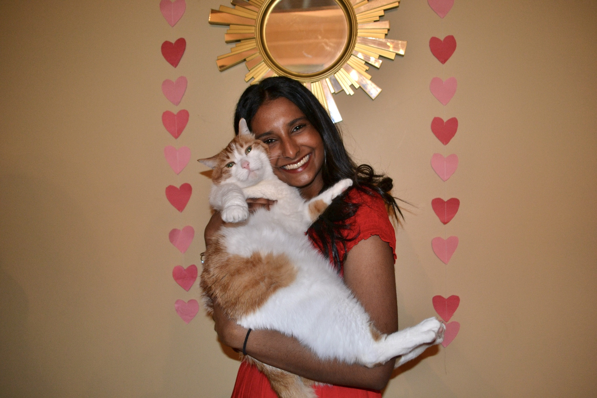

Student, Developer, UI/UX Designer
I'm a developer and UI/UX designer from Memphis, TN passionate about designing for clients and making real world impact. I'm driven by my passion for creativity and conducting user research to design smart, effective, and aesthetic systems, websites, and apps. I am currently based in Chapel Hill, North Carolina.
2023–2027
Major: Information Science
Relevant Coursework: Information Retrieval, Foundations of Information Science, User Experience Design, Interactive Media
2023–2027
Major: Computer Science
Relevant Coursework: Data Structures and Algorithms, Intro to Software Engineering, Modern Web Programming
I love painting landscapes and portraits with super bright colors!
Favorite Medium: Acrylic
Recent Reads: Dr. Jekyll and Mr.Hyde, A Murder of Quality, Pride and Prejudice
I enjoy running, and I am trying to get into recreational lacrosse